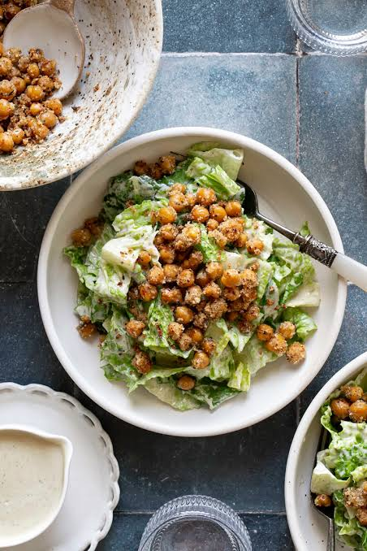

Chickpea Salad

Description
A fresh, no-cook salad of chickpeas, crunchy cucumber, tomatoes, and red onion in a tangy lemon and olive oil dressing. It's protein-packed and keeps well in the fridge, so it's good for meal prep or lunch.
Ingredients
- canned chickpeas (1 can, drained)
- cucumber (1, diced)
- cherry tomatoes (1 cup, halved)
- red onion (¼, diced)
- lemon juice (2 tbsp)
- olive oil (2 tbsp)
- salt
- pepper
Steps
- Rinse and drain the chickpeas.
- Combine them with the cucumber, tomatoes, and onion in a bowl.
- Whisk the lemon juice, olive oil, salt, and pepper together.
- Pour the dressing over the salad and toss.
- Chill for 10 minutes if you have time, then serve.
HOME